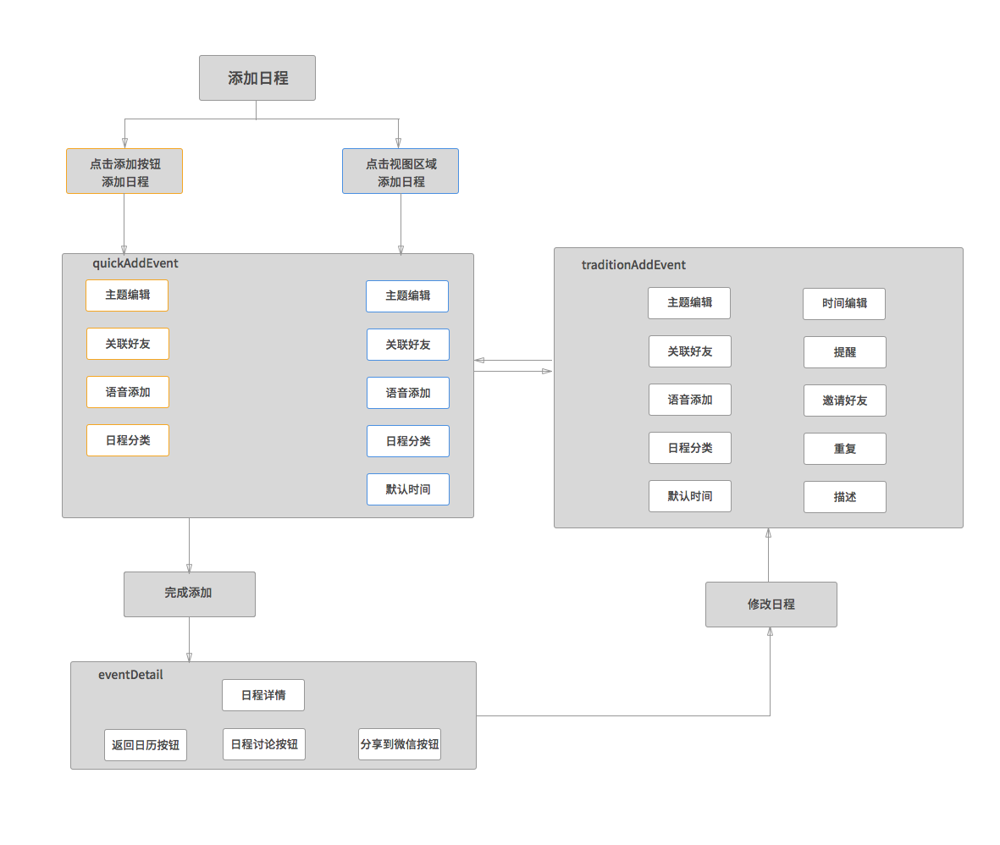

添加日程需求文档
1 概述
添加日程分为智能添加和完整添加两部分，智能添加可以通过文字和语音识别出时间，完整添加和原生日历一致。
如果用户通过点击添加按钮添加日程，进入智能添加页面，没有默认时间；如果通过点击周视图和日视图添加日程，则进入智能添加页面之后，显示选中的时间。逻辑图如下所示

2 添加日程交互流程
2.1 通过添加按钮添加日程
2.1.1 智能添加交互动画
如果无法观看视频，请安装最新版的Safari
2.1.2 完整添加交互动画
如果无法观看视频，请安装最新版的Safari
！！注意：在动画中从选择提醒等页面返回到添加页面时会自动跳到顶部，实际操作过程中，不需要自动跳转到顶部
2.1.3 添加日程相关备注
- 默认进入智能添加页面,进入后自动打开键盘
- 默认日程类别为工作
- 智能添加提供“主题”和“添加好友”两个按钮
- 文本框提示输入规范
- 点击文本框，开始输入。同时下方出现模拟的时间区域
- 输入第一个字时，模拟时间区域出现
- 模拟时间区域日程的颜色和所选类别保持一致
- 随着输入文字的增加，模拟的时间自动变化
- 如果输入时间有误，则需要进入完整添加页面修改
2.2 通过点击周视图和日视图添加日程
2.2.1 通过日视图添加日程
如果无法观看视频，请安装最新版的Safari
2.2.2 相关备注
- 点击日视图空白区域，出现浅色添加日程方框，再次点击方框进入添加日程页面
- 长按也可直接添加日程
- 直接显示模拟时间区域，开始时间为选中的时间，默认时长为1小时
- 可以直接输入文字或者语音
2.3 添加重复性日程
- 重复页面提供6种默认重复方式
- 支持自定义重复
- 自定义重复如果选择日、月、年，则在下方选择间隔
- 自定义重复选择周时，先选择周几。点击“工作日”则自动选中周一至周五，选择周末则自动选择周日和周六
- 点击完成，直接跳转到添加页面
2.4 添加日程关联好友
添加日程关联好友的步骤在本文档中已经介绍。本节主要介绍添加日程且关联好友之后的逻辑。
2.4.1 被关联方收到提醒的逻辑
3 添加功能视觉效果及标注
- 输入框高度为88px,内描边1px。若两个框相连，则上方输入框的下描边与下方输入框的上描边重合
- 输入框内文字距离左侧30px
- 输入框内lable采用#AAAAAA和#555555两种颜色
- top menu的取消和完成距离两边18px
- 整体的背景色为#FAFAFA
3.1 完整添加主页面
完整添加页面可以输入：主题，地点，添加好友，时间，重复，提醒和描述功能
3.2 智能添加主页面
智能添加页面最开始只提供主题输入框，用户可以文字输入和语音输入。输入文字的同时，下方出现“模拟时间”区域
智能添加的动画效果参见Tempo
3.3 添加好友
添加好友，进入添加好友页面。添加好友页面分为3部分：搜索框，全部好友按钮和常用好友
搜索好友采用iphone的原生搜索效果
常用好友按照联系次数和联系时间排序
进入全部好友页面选择好友之后，选中的好友会出现在常用好友中
常用联系好友好友最多显示50个
主页面最多显示4个头像，多于4个头像时，显示更多按钮
3.4 添加重复
1.0版仅提供以下重复方式：每天，每周，每两周，每工作日，每周末，每月，每年
暂不提供自定义
3.5 添加提醒
添加提醒可多选
在主页面显示15个中文字，最后1个为省略号